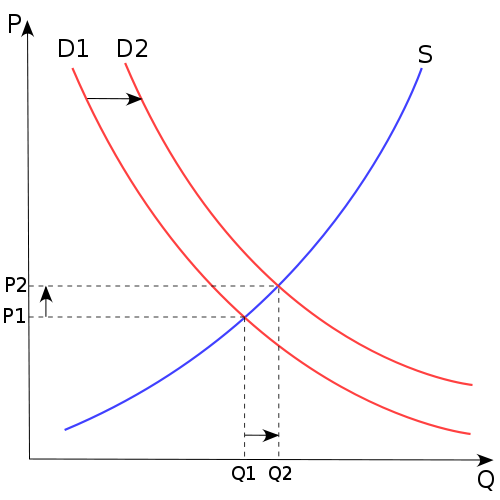
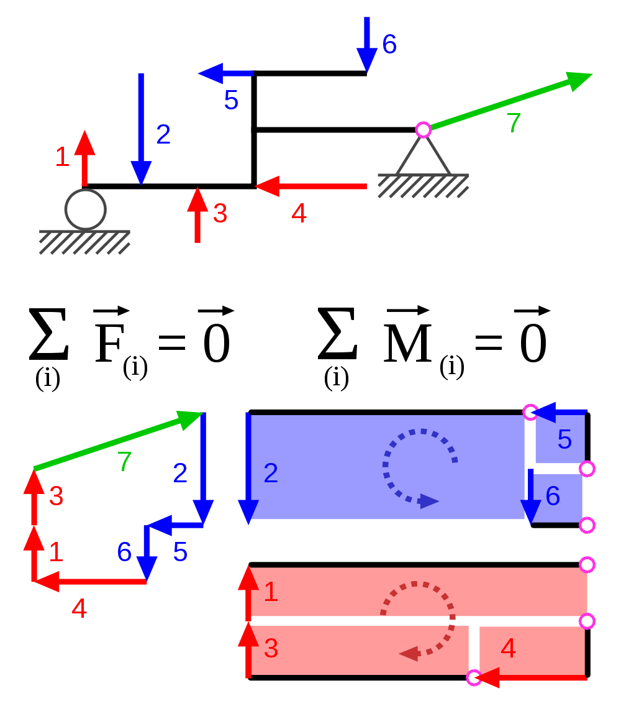

Macroeconomics
Lectures
Models
Quizzes
Chapter 2
Useful Tools and Concepts
45 slides
Contents · 45 slides
Useful Tools and Concepts Empirical Investigation Empirical Investigation Empirical Investigation Time Series Data Correlation Does Not Imply Causation Theoretical Investigation Theoretical Investigation Model Ceteris Paribus Historical Investigation Economic Tradeoffs Abundance Scarcity Production Possibilities Frontier Opportunity Cost Efficiency Tradeoffs Over Time Slide 19 Slide 20 Slide 21 Technological Progress Discussion The Role of Markets The Meaning of Markets The Meaning of Markets The Meaning of Markets The Basic Neoclassical Model Circular Flow in the Economy The Advantages of Markets Decentralized Planning Institutional Requirements of Markets Private Property Social Institutions of Trust Infrastructure Money The Limitations of Markets Public Goods Free Riders Externalities Transaction Costs Market Power Information and Expectations Statics Vs. Dynamics Human Needs and Equity
1 Useful Tools and Concepts
2 Empirical Investigation
3 Empirical Investigation
Observation and recording of specific phenomena of concern
4 Empirical Investigation
5 Time Series Data
Observations of how a numerical variable changes over time
6 Correlation Does Not Imply Causation
Umbrellas do not cause rain!
7 Theoretical Investigation
8 Theoretical Investigation
Analysis based in abstract thought
9 Model
An analytical tool that highlights some aspects of reality while ignoring others
10 Ceteris Paribus
11 Historical Investigation
12 Economic Tradeoffs
Life consists of tradeoffs
13 Abundance
Would you pay for fresh water if you lived here?
14 Scarcity
Would you pay for fresh water if you lived here?
15 Production Possibilities Frontier
16 Opportunity Cost
The value of the best alternative that is foregone when a choice is made: will you do your homework or go to a nightclub?
17 Efficiency
Uses the minimum of resources to achieve the desired result.
18 Tradeoffs Over Time
19 Slide 19
PPF with Additional Resources or Technological Progress
20 Slide 20
Quantity of Resource-Depleting Production
21 Slide 21
Future PPF with High Resource Maintenance Now
Future PPF with High Resource Depletion Now
22 Technological Progress
23 Discussion
Suppose that your study time can be allocated either to studying for this course or to studying for another course. Your two “outputs” are your grades in each course. Draw a production possibilities curve for these two outputs.
24 The Role of Markets
25 The Meaning of Markets
Can mean a physical place .
26 The Meaning of Markets
27 The Meaning of Markets
Can mean the abstract idea of a pure exchange economy.

28 The Basic Neoclassical Model
A simple, mechanical model that portrays the economy as a collection of profit-maximizing firms and utility-maximizing households interacting through perfectly competitive markets.
29 Circular Flow in the Economy
30 The Advantages of Markets
31 Decentralized Planning
These prices are set by each company, using locally available information and local decisions.
32 Institutional Requirements of Markets
34 Social Institutions of Trust
A contract being negotiated
36 Money
Widely accepted medium of exchange
37 The Limitations of Markets
38 Public Goods
40 Externalities
41 Transaction Costs
42 Market Power
43 Information and Expectations
44 Statics Vs. Dynamics
45 Human Needs and Equity